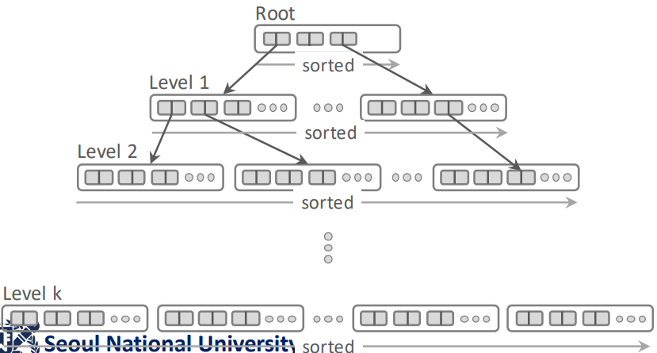
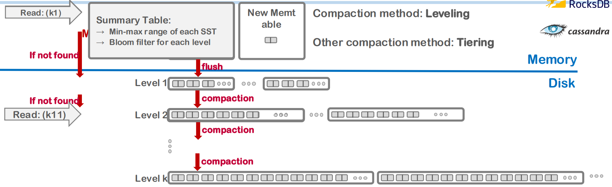
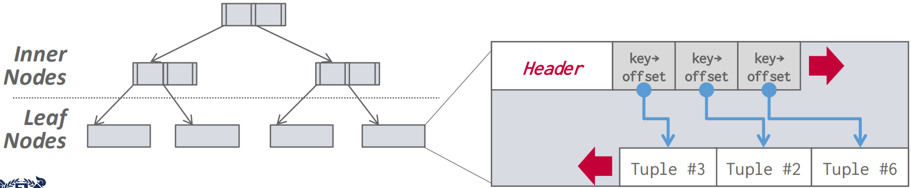
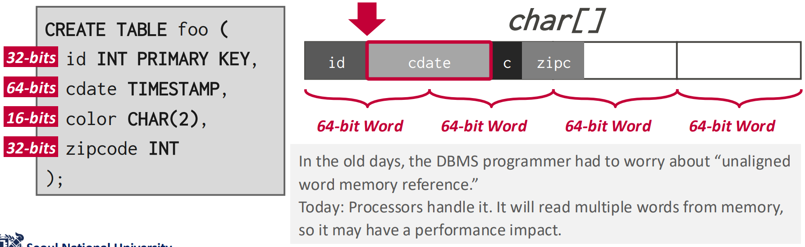
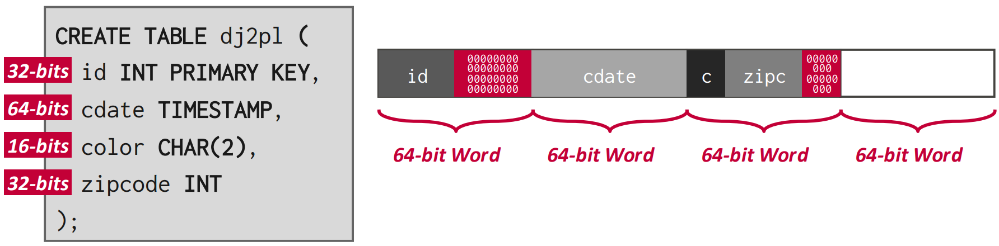
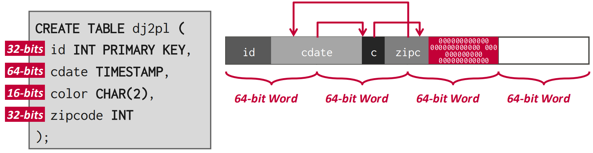

서울대학교 데이터사이언스대학원 정형수 교수님의 "데이터사이언스 응용을 위한 빅데이터 및 지식 관리 시스템" 강의를 필기한 내용입니다.
Checkin (Revisit Storage part 1)
- Page-oriented storage scheme
- page ID 라는 logical address 를 이용해 page 의 physical location 을 indirection 한다.
- Slotted array
- page 내에서의 tuple 들의 위치를 slot array 로 가리키도록 하여 tuple 들의 page 내에서의 physical location 을 indirection 한다.
- Tuple header
- Tuple 앞의 tuple header 에 variable sized attr 의 시작주소와 사이즈를 명시하여 attr 의 physical location 을 indirection 함
- CS principle
- Abstraction: lower-layer 에서의 detail 과 implementation 이 higher-layer 에 영향을 미치지 않도록 하기
- Design Rationale: 기존의 문제점에 대한 원인과 그것을 해결하기 위한 새로운 디자인
Tuple oriented storage (Row-store)
- naive approach
- page insert:
- page directory 를 읽어 (1 IO) 빈 slot 이 있는 page 를 알아냄
- page 를 open 함 (2 IO)
- 여기에서 빈 slot 에 tuple (의 offset, size) 을 넣음
- page update:
- RID 에 적혀있는 page ID 를 이용해 page directory 에서 해당 page 를 찾음 (1 IO)
- page 를 open 함 (2 IO)
- RID 에 적혀있는 slot ID 를 통해 tuple 을 찾고, 여기에의 내용을 변경한 후, (size 가 변경되었을 것이므로) slot 의 내용을 업데이트한다.
- 만약에 변경한 결과가 너무 커서 기존의 위치에 들어가지 못한다면, 이 tuple 은 deleted 로 marking 하고 새로운 slot 을 탐색하여 넣는다.
- 이 방식의 문제점
- Fragmentation: 빈 공간이 파편화되어 있어 빈 공간의 총 크기는 커도 이 공간에 아무것도 저장하지 못하는 것
- External fragmentation: tuple 외부에 생기는 hole
- tuple 이 삭제된 뒤에 해당 자리에 더 작은 사이즈의 tuple 이 들어가 남은 부분에 hole 이 생겨 여기에는 빈공간임에도 불구하고 아무도 못들어가는 자리가 됨
- 이걸 위해 tuple 들을 재배치해 hole 들을 모으는 page compaction (reorganization) 작업을 한다.
- 당연히 이것은 무거운 작업이다.
- Internal fragmentation: tuple 내부에 생기는 hole
- NULL 등을 위해 column 을 위한 공간을 잡아놓긴 했지만 사용하지 않은 경우
- 다른 column 의 데이터는 이 공간을 사용하지 못하기 때문에 이 공간 또한 fragmentation 이라고 부른다
- 이 경우에는 tuple 공간을 나중을 고려해서 미리 잡아놓은 것이기에 저런 compaction 같은 작업을 해줘도 공간 낭비를 막을 수 없다고 한다.
- 여기에서는 external frag 에 집중하자.
- External fragmentation: tuple 외부에 생기는 hole
- IO Amplification
- Block IO 로 인한 amp 도 있고
- Page 전체를 fetch 해야 하는 데에서 기인하는 amp 도 있다
- Write 의 경우 WA/WAF, Read 의 경우 RA/RAF
- Random IO
- 여기에 대해서는 별 설명은 안했다; Sequential IO 가 Random IO 보다 더 좋은 것은 이미 알고 있죠?
- 이 random IO 의 가장 큰 원인은 in-place update 에 있다; 따라서 이것을 out-of-place update 로 바꿔서 해결할 수 있을 것이다.
- Fragmentation: 빈 공간이 파편화되어 있어 빈 공간의 총 크기는 커도 이 공간에 아무것도 저장하지 못하는 것
- page insert:
Log-structured storage
- key idea 는
- In-place update 를 위한 random IO 를 줄이고자
- out-of-place update 를 하여 sequential IO 를 하고
- 나중에 누군가가 이 out-of-place update 내용을 실제로 반영하는 작업을 하게 하자
- 그리고 이 작업은 compaction 때 수행하자 (= deffered compaction)
- 이건 LSM 에서의 compaction 으로, fragmentation 을 해결하기 위한 compaction 랑 헷갈리면 안된다.
- 애초에 LSM 에서는 out-of-place 이기 때문에 fragmentation 이 발생하지 않는다.
- 다만 data redundancy 는 있다 그죠?

- 이전에의 b-tree index 는
- 일단 b-tree 는 leaf-root 간의 높이 (height) 가 모든 leaf node 에 대해 동일한 (balanced) tree 를 말한다.
- b-tree index 에서 각 node 는 page 이다.
- 이것으로 index 를 구현하는 것은 일단 tuple 들을 key 를 기준으로 정렬하고 pagination 하여 여려개의 node 로 잘라 leaf node 를 만들고
- 이들의 첫번째 key 들을 모은 다음 pagination 하여 parent level 을 만드는 작업을 root 까지 반복하여 tree 를 구성한다.
- 그리고 이 index 로 tuple 을 찾아가는 것은
- 어떤 한 node 에는 n 개의 key 가 sort 되어 저장되게 될텐데
- 원하는 key () 와 node 내의 key ( ~ ) 들을 쭉 비교해 나간다.
- 이 “key ( ~ ) 가 담긴 node” 를 경로를 잡기 위한 node 라는 의미로 Guide Post 혹은 Routing Node 라고 한다.
- 만약 이 과정에서 인 Ki 를 찾으면 이 key 가 가리키고 있는 자식 node 로 내려간다.
- 이 과정을 반복해서 결국에는 tuple 을 찾게되는 것.
- 근데 이 방식의 경우에는 (1) 각각의 node page 들을 읽어야 하는 random IO 와 (2) 어쩔 수 없이 page 전체를 읽어야 하는 IO amp 와 (3) page 내에서 tuple 을 변경했을 때 발생하는 fragmentation 문제가 생긴다는 것.
- 일단 b-tree 는 leaf-root 간의 높이 (height) 가 모든 leaf node 에 대해 동일한 (balanced) tree 를 말한다.

- 그래서 이 방식을 storage-friendly 하게 하기 고안한 것이 LFS 의 log-structure 를 차용한 LSM tree 이다.
- 그럼 LSM tree 도 결국에는 이 index 인가?
- LSM tree 어느정도는 알고 있으니까 간단하게만 요약해보면
- Insert 뿐 아니라 update 도 그냥 append only 로 sequential write 하고
- 이 sequential write 한 사이즈가 커지면 내용을 sort 해서 sealing 한 뒤 (immutable)
- 이 sealing 된 것이 SST (Sorted String Table) 이다
- Sealing 되기 전 공간은 memory 상에 있으며 여기가 memtable 이다
- Memtable 에서는 사실은 sequential write 라기 보다는 sorted write 된다
- 즉, memtable 내에서는 항상 sorting 된 상태로 write 되는 것
- 그리고 이 사이즈가 threshold 를 넘으면 SST 로 sealing 되는 것이고
- tuple update 가 delta insert 로 바뀌어 memtable 에 쌓이기 때문에 전체 구조 관점에서는 sequential write 가 되는 것.
- 그리고 SST 파일 또한 계속해서 sequential write 된다.
- 특정 조건이 되면 SST 여러개를 deffered merge compaction 한다.
- Deffered: update 반영을 나중에 (즉, 즉각적으로 하는 것이 아니고 compaction 시점에) 하는 것
- Merge: merge sort 에서의 merge 방법 - 각 SST 는 이미 sort 되어 있기 때문에 merge 만 하면 된다
- Compaction: update 를 반영하며 두 SST 를 하나의 SST 로 뭉치는 것
- Original 과 update 가 동일한 key 에 대한 서로 다른 value 이기 때문에 이 “Update 를 반영함” 이라는 것은 중복 제거의 역할이 되고, 따라서 두 SST 의 사이즈 총합보다 작은 사이즈의 SST 가 생성되어 “Compaction” 이라는 이름이 붙는 것.
- “특정 조건” 이라는 것은 구현에 따라 다르다. 가령 Leveled compaction 의 경우에는, 여러 SST 들이 “Level” 이라는 단위로 묶여있고, 이 “Level” 단위의 데이터 사이즈가 threshold 를 넘어서면 compaction 이 일어나게 된다.
- 이 compaction 과정에도 tradeoff 가 있다.
- 일단 SST 를 compaction 하게 되면 장점은 중복이 줄어들어 용량을 적게 사용하고
- SST 파일이 적게 생성되기 때문에 read 성능이 좋아진다.
- 이건 왜냐면 SST 파일 하나에 대해서 모든 key range 를 커버하기 때문에 (tiering 의 경우)
- SST 파일이 여러개로 나뉘어 있으면 각각의 SST 를 BST 로 탐색해야 하지만
- 이놈이 하나의 SST 로 compaction 되면 이 파일 하나만 탐색하면 되기 때문
- 하지만 단점은 당연히 compaction 이 IO 를 요하는 작업이라는 것이다.
- 왜냐면 여러개의 SST 를 메모리로 읽어들여 하나의 SST 로 합치고 다시 flush 하는 작업이기 때문.
- 이 LSM index 에서 key 는 PK, value 는 record 라고 생각하면 됨
- SST 의 header 에는 SST 내부에서 원하는 key 를 빨리 찾게 하기 위한 BST index (sort 되어 있기 때문에) 가 들어있다.
- Tiering vs Leveling
- Tier 와 Level 모두 compaction 된 단계를 뜻하는 용어인데 세부적인 부분이 다르다.
- 공통점은 둘 다 특정한 size limit 에 걸리면 compaction 이 발생하고 이때 아래로 내려간다는 것인데
- 차이점은
- 일단 leveling 에서는 같은 level 에 있는 SST 간에는 key range overlap 이 존재하지 않는 반면
- Tiering 에서는 그런 제약조건은 없다는 것이다.
- 따라서 leveling 에서는 compaction 이 발생했을 때 key overlap 이 되는 다음 level 의 SST 까지 다 묶어서 compaction 하는 반면
- Tiering 은 해당 tier 를 compaction 을 한 뒤에 다음 tier 로 내려보내되 만약 다음 tier 로 내려갔을 때 size limit 에 걸리지 않으면 당장은 compaction 하지 않는다.
- 일단 leveling 에서는 같은 level 에 있는 SST 간에는 key range overlap 이 존재하지 않는 반면
- 따라서 leveling 의 경우 “non-overlapped sorted run” 이라는 추가적인 제약조건에 의해 compaction 이 더 오래걸리지만 대신 read 가 더 빠르고
- Tiering 의 경우 compaction 이 빨라 write 에 이점이 있지만 read 시에는 각 SST 를 탐색해야 한다는 점 때문에 penalty 가 있다.
- RocksDB 에서는 이 둘을 섞어서 L0 에서는 tiering 을 사용하고 L1 부터는 leveling 을 사용한다.
- 아마 L0 에서는 쏟아져 들어오는 write 에 빨리 대응하기 위해 tiering 을 사용하고 L1 부터는 write 빈도가 점점 줄어들기 때문에 read 에 대응하기 쉽게 하기 위해 leveling 을 사용하는 것일듯
- 그리고 L0 에서는 어차피 memtable 하나밖에 없기 때문에 tiered SST 여도 빠르게 read 가능하고 심지어 in-memory 이기 때문에 너무 빠를듯
- Tier/level 이 내려가면 그 크기는 exponential 하게 커지는데, 그 비율은 일반적으로 10이다.
- LSM 의 단점은 알다시피 중복된 데이터가 있을 수 있어 용량 문제가 있다는 것
- 이런 특징때문에 LSM tree 의 별명은 write-optimized tree 이다.
- Read 를 조금이라도 효율적으로 하기 위해 bloom filter 등을 summary info. 에 넣어서 lookup 횟수를 줄인다고 한다.
- Tier/level 이 낮을수록 최신의 데이터고, 따라서 읽을때도 낮은 tier/level 부터, 그리고 merge 할 때도 comflicted data 에 대해 낮은 tier/level 의 값을 취한다.
- compaction 의 방법중에서는 universal compaction 이라는 것도 있다: 그냥 모든 SST 를 다 합쳐서 one-level SST 로 만들어 버리는 것.
- 이 LSM 은 write 에 더 강하기 때문에 많은 DBMS 들이 default 로 사용되지는 않아도 option 으로서 제공한다.
Index-organized storage

- 이놈은 B-tree based index 를 사용하는 놈을 일컫는다.
- 전통적으로 많은 DBMS 들이 사용해 왔고 기본적으로 제공되는 방법임
- 그래서 tuple 들은 page 내에서 key 로 sort 되고, 이 page 들의 key 로 b-tree 를 구성하는 형태를 가진다.
- 대표적으로는 MySQL 을 생각하면 된다: 여기서는 index-organized storage 를 사용하기 때문에 b+ tree index 의 leaf 에 바로 page 가 달려있다.
- 하지만 PostgreSQL 에서는 index-organized storage 가 아니라 이전 강의 에서 배운 Heap file organization 으로 되어 있다: b-tree 에 RID 가 달려 있고, page 들은 Heap file 에 분리되어 저장되어 있어서 RID 로 page 를 찾아가는 형태를 띈다.
Word alignment for the tuple
- Tuple 은 그냥 byte stream 일 뿐이고 이것을 해석하는 것은 DBMS 이기 때문에 그 아래의 CPU 는 이게 뭔지 모르고 그냥 처리한다.
- 즉, CPU 로 데이터를 읽을 때는 byte 단위로 읽어오지 않고 “word” 단위로 읽기 때문에 이 word 에 align 되게 해야 한다.
- 32bit 운영체제는 32bit, 64bit 운영체제는 64bit 의 “Word” 단위를 가진다.
- 따라서 tuple 을 저장할 때 이걸 고려하지 않으면 좀 멍청해 질 수 있다.

- 보면 저 cdate 를 읽기 위해서는 64bit word 두개를 읽어야 한다는 것을 볼 수 있다.

- 그래서 위처럼 padding 을 넣을 수 있다.

- 혹은 위처럼 reordering 을 통해 이 padding 들을 합치기도 한다.
- 위 그림은 좀 헷갈리게 되어 있다: 저건 reordering 전 모습이고, 화살표대로 움직이는 것이 reordering 임
- 이런 padding 이 결국에는 internal fragmentation 이 되는 것.
Additional representation methods…
- NULL: nullmap 을 사용한다.
- 즉, null-able 한 column 들의 개수로 이루어진 bitmap 을 준비하고
- 해당 순서의 column 의 값이 NULL 이면 그 bit 을 1로 적는 것.
- nullmap 을 사용하지 않으면 뭐 special value (INT_MAX 등) 을 사용할 수 있지만 그럼 해당 값을 이 용도로밖에 못쓰기 때문에 (delimiter 처럼) 문제가 있음
- Large value: 큰 값의 경우에는 별도의 저장공간 (Overflow page) 에 저장하거나 아니면 아예 file 로 빼버린 다음 external value flag 를 켜준다
- 이 파일은 BLOB (Binary Large OBject) 으로 취급된다
- 저 overflow page 는
- PostgreSQL 에서는 TOAST 라고 부르고 데이터가 2Ki 를 넘으면 저기로 보낸다.
- MySQL, SQL Server 에서는 설정된 page size 의 절반을 넘으면 저기로 보낸다.
- System catalog:
- DB 의 metadata 나 statistics, schema 등은 이 system catalog 에 저장된다.
- SQL 표준으로는
INFORMATION_SCHEMA라고 이름붙여져 있으며 이건 각 DBMS 에 따라 다를 수 있다.- 가령 PostgreSQL 에서 table 들을 조회하기 위한
\d명령어가 이런 예시임
- 가령 PostgreSQL 에서 table 들을 조회하기 위한
- Index: CREATE/DROP INDEX … 로 index 를 생성, 삭제할 수 있다. (나중에 자세히 배운다고 하고 이정도만 설명함)